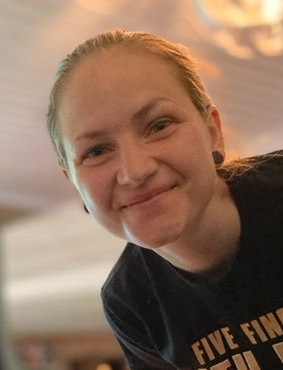

Louise Norrsén
- Ålder: 31
- Familj: Man, barn 5år, barn 4år
- Bostad: Hus
- Husdjur: Hund och katt
- Yrke: Förskollärare
- Drömyrke: Programmerare
- Favoritmat: Sushi

Klicka för större bild
Ett av mina största intressen just nu är programmering. Jag har som mål att komma in på någon utbildning som har med programmering att göra till höstterminen 2022. På dagarna jobbar jag som förskollärare och tar hand om min familj, på kvällarna sitter jag vid datorn och lär mig programmera via en sida som heter Codecademy.